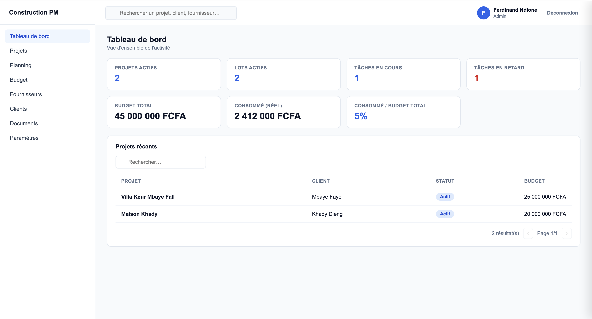
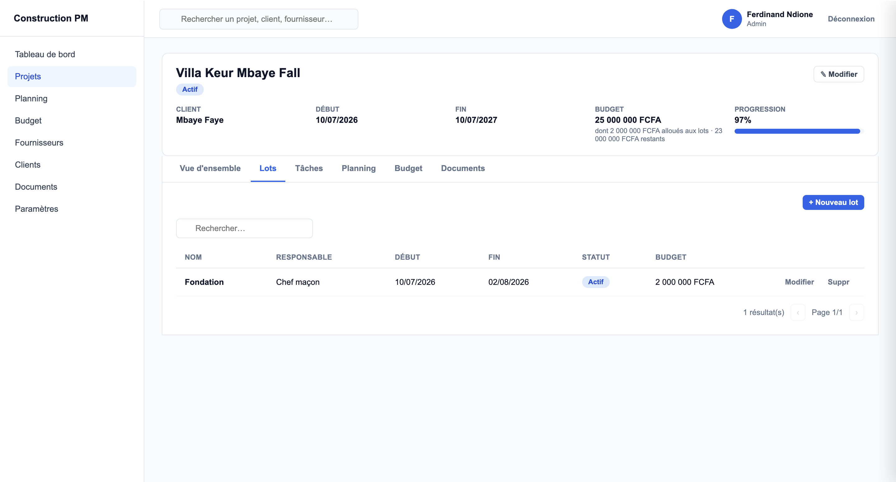
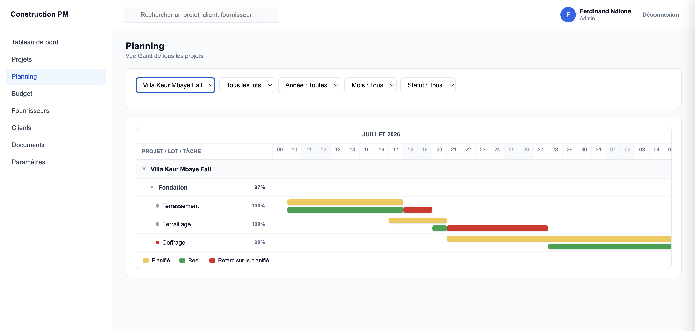
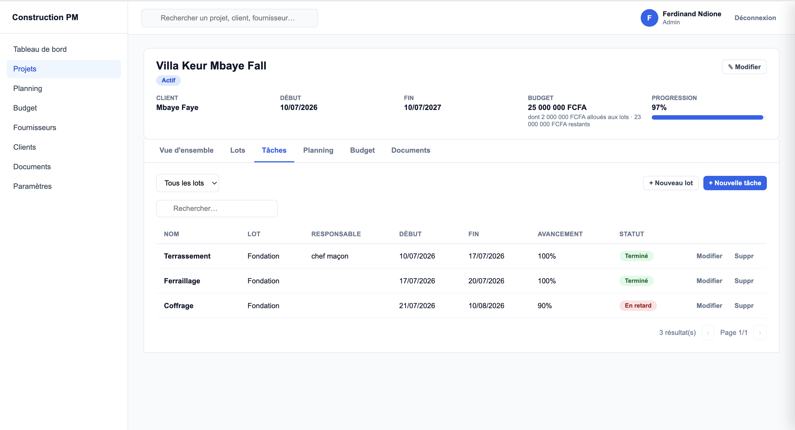
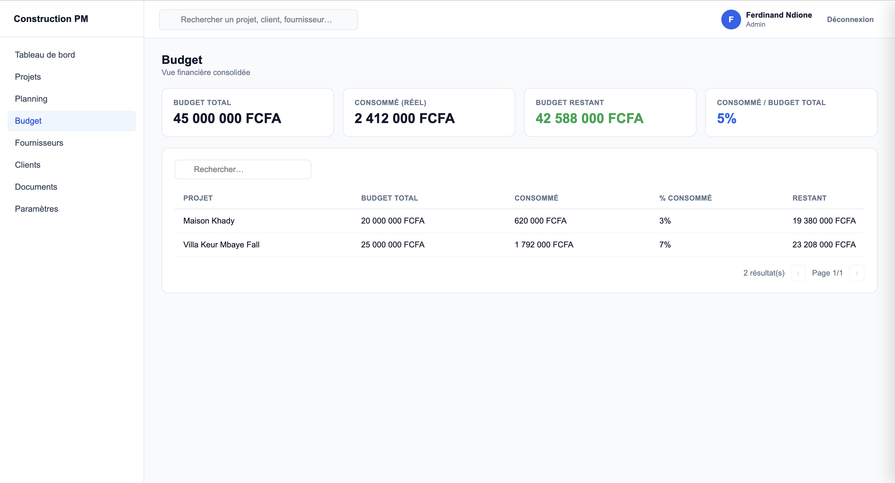

Gestion BTP
Sur un chantier, le plus dur n'est pas de travailler, c'est de savoir exactement où vous en êtes. Gestion BTP centralise vos projets, vos tâches et vos coûts dans un seul espace.

Voyez l'application en action

Un chantier, un workflow simple
Chaque projet se découpe en lots (fondation, gros œuvre, finitions...), chacun avec ses tâches, son responsable et son budget. Vous suivez l'exécution au fur et à mesure, sans jongler entre plusieurs outils.
Projet → Lots → Tâches → Exécution → Résultats réels

Ne regardez pas que le budget prévu. Suivez ce qui a réellement été fait.
Le planning affiche le prévu et le réel côte à côte. Une tâche planifiée du 10 au 15 août mais terminée le 18 ? L'écart devient immédiatement visible, sans attendre le point hebdomadaire.

Repérez les tâches en retard avant qu'elles ne bloquent le chantier.
Chaque tâche affiche son avancement et son statut. Une tâche en retard ressort immédiatement dans la liste, avec son responsable et son lot, pour agir avant que le retard ne se propage.

Tout ce qu'il faut pour piloter un chantier
À quoi ressemble l'application

Ce que ça change au quotidien
Moins de surprises budgétaires
Le consommé et le restant s'affichent en temps réel, projet par projet.
Les retards visibles tôt
Une tâche qui glisse se voit immédiatement sur le planning, pas en fin de chantier.
Une vision multi-projets
Suivez plusieurs chantiers en parallèle depuis un seul tableau de bord.
Responsabilités claires
Chaque lot et chaque tâche a un responsable identifié, sans ambiguïté.
De la demande à l'utilisation
Demandez votre accès
Remplissez le formulaire pour Gestion BTP.
Nous vous contactons
Un échange pour comprendre le fonctionnement de vos chantiers.
Votre accès est créé
Votre espace est prêt, avec vos premiers projets configurés.
Vous testez gratuitement
Suivez un vrai chantier avant de décider.
Pensé pour votre activité
Entreprises de BTP
Pilotez plusieurs chantiers depuis une seule interface.
Chefs de projet
Planifiez, suivez et contrôlez l'avancement.
Conducteurs de travaux
Gardez une vision claire des tâches et des délais.
Maîtres d'œuvre
Suivez les coûts et l'exécution de vos projets.
Prêt à essayer Gestion BTP ?
Demandez votre accès gratuit, nous créons votre espace et vous envoyons vos identifiants.
Demander mon accès gratuit